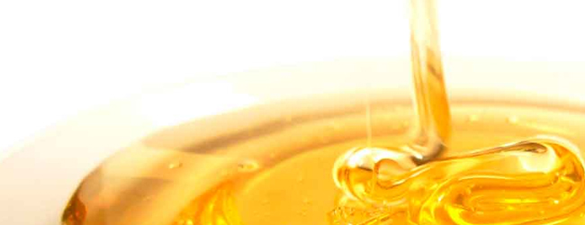

Come si produce
Il miele è prodotto dall'ape sulla base di sostanze zuccherine che essa raccoglie in natura.
Le principali fonti di approvvigionamento sono il nettare, prodotto dalle piante da fiori (angiosperme), e la melata, che è un derivato della linfa degli alberi, prodotta da alcuni insetti succhiatori come la metcalfa, che trasformano la linfa delle piante trattenendone l'azoto ed espellendo il liquido in eccesso ricco di zuccheri.
Per le piante, il nettare serve ad attirare vari insetti impollinatori, allo scopo di assicurare la fecondazione dei fiori.
A seconda della loro anatomia, e in particolare della lunghezza della proboscide (tecnicamente detta ligula), le api domestiche possono raccogliere il nettare solo da alcuni fiori, che sono detti appunto melliferi.
La composizione dei nettari varia secondo le piante che li producono.
La produzione del miele comincia nel gozzo dell'operaia, durante il suo volo di ritorno verso l'alveare. Nel gozzo l'invertasi, un enzima che ha la proprietà di scindere il saccarosio in glucosio e fruttosio, si aggiunge al nettare, producendo una reazione chimica, l'idrolisi, che dà, appunto, glucosio e fruttosio.
Giunta nell'alveare, l'ape rigurgita il nettare, ricco d'acqua, che deve poi essere disidradato per assicurarne la conservazione. A questo scopo, le bottinatrici lo depongono in strati sottili sulla parete delle celle. Le operaie ventilatrici mantengono nell'alveare una corrente d'aria che provoca l'evaporazione dell'acqua. Quando questa è ridotta ad una percentuale dal 17 al 22%, il miele è maturo.
Viene quindi immagazzinato in altre cellette, che una volta piene saranno sigillate (opercolate). Il miele è per le api un alimento di "riserva", nutrendosi di nettare e polline hanno la necessità di accumulare scorte di cibo. Così trasformano il cibo fresco dell'estate in un alimento a lunga conservazione.
Anche il polline viene raccolto dalle api, ma non serve per l'elaborazione del miele, ma come alimento proteico per le forme giovanili. Nel miele il polline è presente solo in piccolissima quantità, come componente accidentale.
Tratto da: http://www.alimentipedia.it/le-api-come-producono-il-miele.html
Copyright © Alimentipedia.it
Curiosità
Io "spargimiele" o "prendimiele" è un oggetto utilizzato per spalmare il miele. È utilizzato anche per abbellire le confezioni regalo. È costituito da un manico e da una "testa" scanalata ed è solitamente lungo circa 13,5 cm con un diametro della testa di circa 3 cm.